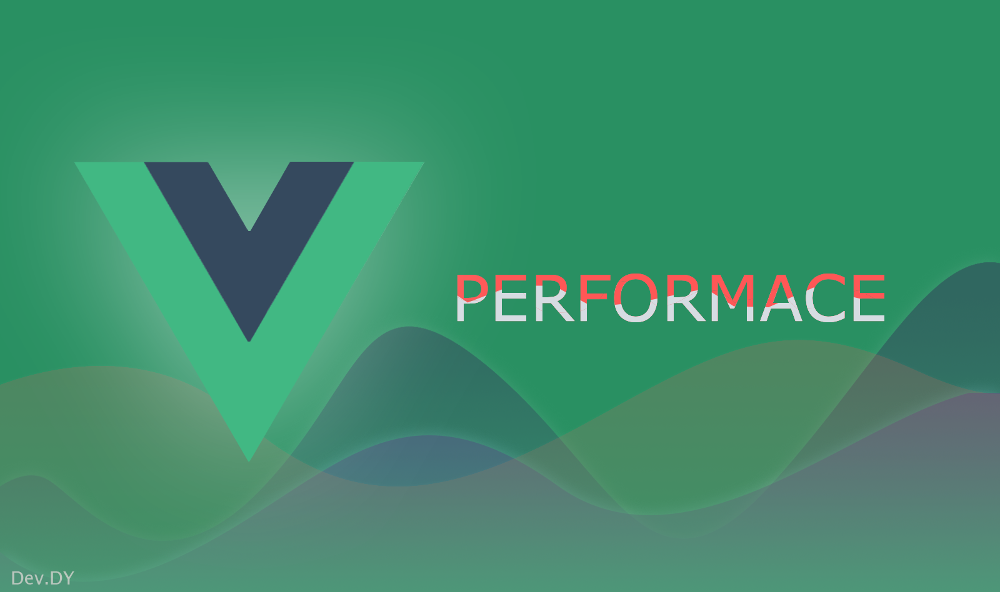

[Vue.js Tutorial] Vue.js에 대용량 데이터의 처리 (Vue.js Performance)

1년간 대규모 프로젝트를 진행하면서 어려운 점이 한 두 가지가 아니다. 그 중 멘탈이 나갈뻔한 Top 1을 뽑자면 역시 Vue 성능이었다. 절대적으로 Vue의 성능이 느리다는 것은 아니다. Vue는 제 할 일을 다하고도 감탄하게 만드는 프레임워크라는 것에 변함은 없지만, 프로젝트를 진행하면서 수많은 변수가 존재하고 이 변수로 인해서 Vue 성능을 개선해야 되는 경우가 생겼었다. Vue의 성능 최적화는 Vue의 core를 수정하는 것이 아니며, Vue의 반응형에 대해서 깊이 있게 알고 확인해본다면 충분히 해결할 수 있다.
이 포스트에서는 애플리케이션의 하나의 페이지에서 많은 양의 데이터를 표현을 해야 하는 경우 성능이 저하되기 때문에 성능을 높이고자 하는 개발자에게 도움이 되기를 바라며 작성한다.
진행된 프로젝트 환경
먼저 위에서 자꾸 프로젝트.. 프로젝트.. 하는데 어느 형태의 프로젝트 또는 어느 상황 속에서 Vue의 성능을 최적 화해야 하는가를 알아야 하므로 조건을 몇 가지 나열한다.
1번이야 당연하니 넘어가자…
빅 데이터 처리
이 부분부터가 문제가 되기 시작한다. 근무하는 회사의 분야와 진행되는 프로젝트의 특징으로 인해서 한 페이지에서 출력하여 보여줘야 하는 row 데이터는 10만건 정도 된다. 표현은 데이터 테이블 형태로 표현을 해야 한다. 쉽게 보자면… TR 태그의 Element 개수가 최소 10만개를 넘어간다. 당연히 웹에서 표현하기 어렵다. 브라우저가 뻗어버리거나 사용이 불가능할 정도의 성능이 나오기 때문이다.
Client 페이징 처리
물론 10만건의 데이터를 한 번에 표현할 수는 있다. Virtual scroll 기법을 사용하여 현재 화면에서 실질적으로 보여지는 row 만 DOM을 생성하고 이후 scrolling 시에 이어서 DOM을 업데이트 (화면에서 사라지는 부분을 삭제하든. 아니면 업데이트를 해주든.) 해 주면 10만 건이든 100만 건이든 생성되는 DOM의 개수는 제한적이다. 최초 기능의 컨셉을 이렇게 잡고 진행을 하였지만, Virtual Scroll을 구현하기 위한 조건에 충족하지 못하기 때문에 (모든 TR 태그의 높이는 동일해야 한다.) 페이징 처리를 하는데 특성상 Client 측면에서 페이징 처리를 해야 한다.
이 말인즉슨 페이지를 넘길 때마다 API를 통해서 데이터를 조회하는 것이 아닌 최초 모든 데이터를 조회 후 Front-End 측면에서 페이징을 해야 한다는 의미이다.
jQuery 컴포넌트의 사용
데이터는 데이터 테이블 형태로 출력하고 데이터 테이블은 Vue가 아닌 jQuery로 구현되어있고 이 jQuery 플러그인을 Vue로 Wrapping 하여 Vue Component로 재생성하였다. 그렇기 때문에 Vue Component로 생성한 데이터 테이블은 Vue의 반응형 대상에 들어가지만, 내부에 있는 jQuery는 Vue의 반응형 대상이 되지 않는다. 즉 데이터가 변경되면 jQuery 내부에서 DOM을 수동적으로 업데이트를 해줘야 한다.
조건은 위와 같다. Front-End 개발자 입장에서는 뭔 이런 구조가 있나… 싶을 것이지만. 모든 게 내 마음대로 되면 얼마나 좋을까?
그럼 본론으로 들어가 이러한 환경 속에서 어떻게 성능을 최적화하는지 알아보자.
JS Heap Memory의 최소화
Vue의 성능 최적화를 시키는 방법 결론부터 말하자면 js heap memory를 최소화하는 것이다.
대용량 데이터에 대해 서버 페이징 처리 없이 Front-End 측면에서 처리하기 위해서는 최대한 js heap memory를 낮춰야 한다. js heap memory가 증가하면 할수록 UI 상의 모든 컴포넌트가 느려지고 렌더링 역시 느려진다.
메모리가 증가하는 이유는 무언가가 읽고 쓰고 하는 행위를 할 때 증가한다고 볼 수 있다. 변수를 선언할 때에도, 객체의 속성을 읽거나 수정할 때도 증가한다. 이렇게 증가한 메모리는 Garbage Collect에 의해 주기적으로 불필요하게 잡힌 메모리를 해제하여 메모리를 확보하는데 그렇지 않고 계속 쌓이는 경우가 있다. 이럴 경우 일반적으로는 메모리 누수로 판단한고 적절한 조치를 진행한다. 메모리 누수에 대한 몇 가지 조치방법이다.
- 전역 변수의 사용
- 타이머와 콜백
- 외부에서의 참조
- Closures의 사용
자세한 내용은 검색을 통해 확인해 보기 바란다.
Vue에서는 이 내용도 중요하지만 가장 중요한 것은 위에서 언급한 객체의 속성을 읽거나 수정 항목이다.
Vue는 data, state, computed, getters와 같은 모델이 선언되면 defineReactive를 통해 해당 객체는 반응형 관리 대상으로 등록되어 반응적으로 변경이 되는데 이 과정에서 각 개체마다 Observe 생성되고 내부적으로 getter/setter가 생성된다. 실제로 모델의 데이터를 열어보면 __Ob__이 붙은 것을 확인할 수 있다.
생각해보자 10만건에 대해서 객체가 반응형이라면 개체 1개마다 getter/setter가 생성될 것이다. 10만개의 데이터가 단순 배열이 아닌 객체구조라면?? 10만건에 대해 이러한 과정을 거치는 것이(memory write) js heap memory의 증가 이유가 된다.
-p.s 이 부분이 항상 문제가 되는 것은 아니다. 하지만 데이터가 많을 때는 고려하는 것이 좋을 것으로 보인다.-
그래서 가장 중요한 것은 대용량의 데이를 가지고 있는 모델은 Vue의 반응형 관리대상에서 제외를 시키는 것이다.
모델에 대한 가공은 최소화
API를 통해서 데이터를 조회하고 Model 또는 State에 담아 놓는 게 일반적이다. 하지만 API를 통해 조회된 데이터가 실제로 화면에서는 다른 형태의 데이터로 표현해야 하는 경우가 있을 것이다.
예를 들면 use라는 속성값이 0/1 또는 true/false로 올 경우 Front-End 개발자들은 사용/미사용과 같은 형태로 출력해야 하는데 이러한 데이터 가공은 computed나 watch 또는 Store의 getters를 이용한다.
하지만 대용량 데이터를 가져야 하는 모델에 대해서는 최대한 데이터를 가공하지 말아야 한다. 이는 computed를 최소화하고 getters를 최대한 사용하지 말아야 한다는 말과 같다. 위에서 반응형에서 언급했듯이 모델이 반응 적이라면 그만큼 js heap memory를 차지하기 때문이다.
모델에 대한 반응형 제거
해결방법은 단순하다. 대용량 데이터를 가진 모델에 대해 Vue의 감지 대상에서 제거하면 된다. 즉 Observe가 생성되지 않게 처리하면 되는데 이는 vue의 관점에 처리해야 한다.
Object.freeze() - 사용
이를 해결하기 위해서는 대용량 데이터를 가지고 있는 model 또는 state에 대해서 Object.freeze()를 사용하여 처리한다. Object.freeze()는 해당 객체를 read only로 처리를 하기 때문에 이 객체에 대해서는 속성을 추가할 수도 없고 제거할 수도 없으며, 수정할 수도 없다. 또한 해당 객체에 대한 프로토타입 역시 변경할 수 없다. 이렇게 순수하게 read only 객체로 되기 때문에 vue에서도 감지의 대상이 되지 않는다.
Object.freeze()를 사용해야 하는 시점은 API를 통해 데이터를 조회 후 state에 매핑할 때 진행하면 된다
1 | //state |
Object.freeze() - 수정
하지만 위에서 언급한 바와 같이 Object.freeze()를 사용하게 되면 해당 객체는 변경이 불가능하기 때문에 기능상 CRUD의 행위들은 모두 불가능하게 된다. 이 부분은 객체를 복사하는 방향으로 진행할 수 있으며, 객체를 복사한다 하더라고 기존에 증가되는 메모리 양보다는 비용이 적게든다. 중요한 것은 복제된 객체는 전혀 다른 객체가 되므로 Object.freeze()의 대상이 되지 않으며 (map의 경우 동일) 변경이 가능하게 되지만 최종적으로는 다시 Object.freeze()로 vue의 감지 대상에서 제거해야한다.
1 | //state |
Object.freeze - Array.prototype.map
배열 또는 Collection의 경우 map을 통해 객체를 확장, 수정을 진행하게 되는데 map의 경우 clone과 같이 유사한 패턴을 가질 수 있기 때문에(배열을 새로운 배열 요소로 변경) clone을 사용하지 않는 범위에서 위와 같은 절차대로 진행하며, map의 return 자체를 Object.freeze()로 처리한다.
1 | //state |
그 간 웹 Front-End 개발을 하면서 항상 부닥치는 문제는 성능이었다. 대부분이 메모리 누수로 인한 문제였지만 이번만은 좀 다른 형태였던 것 같다. Vue의 겉핥기식으로 배워 프로젝트에 도입하고 1년간 진행하면서 크게 배운 것 하나가 또 이 내용이다. Object.freeze() 사용이 어떻게 보면 비효율적일 수 있을 것이다. 객체를 read only로 변환을 하지만 CRUD의 루틴을 위해 다시 Vue의 감지대상으로 바꾼 후 또다시 Object.freeze()를 통해 read only로 변환한다는 것이.. 좀 더 파고들고 노하우가 더 쌓이면 더욱더 좋은 루틴으로 성능을 최적화하는 방법이 떠오른다면 그때 가서 이 포스트는 수정할 것이다. 그때까지는 이 방법으로 해결하는 것이 좋을 듯하다.
다음 포스트에는 성능 측정 방법에 대해 올려 볼 예정이다.